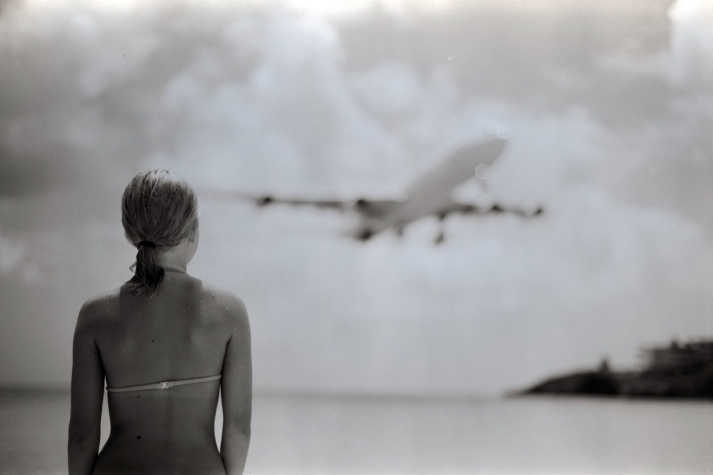
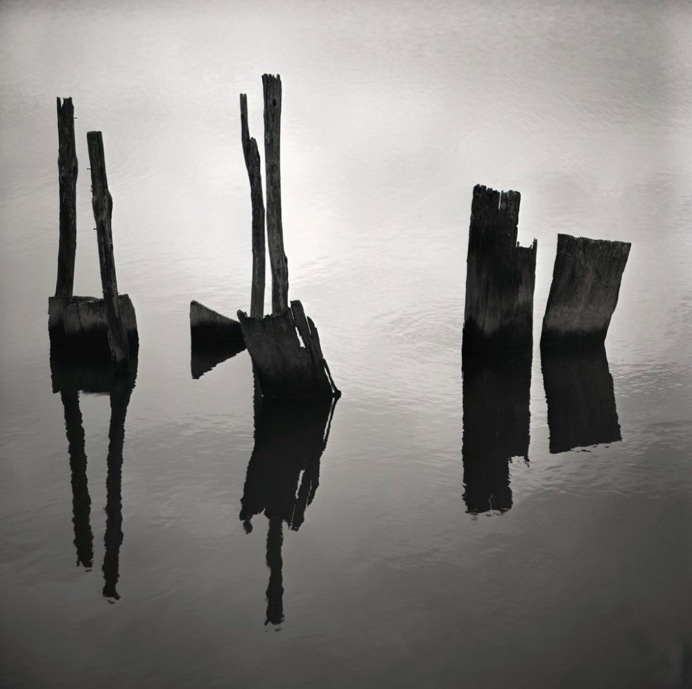
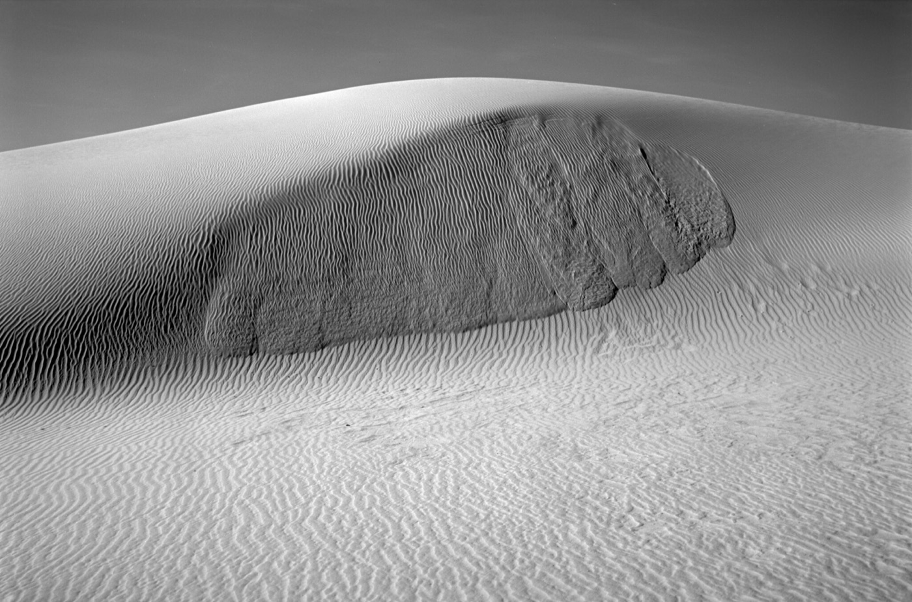

Adox
在产
CMS 20 II 胶卷
- 感光度
- ISO 20
- 类型
- 全色性
- 颗粒
- 超微粒
- 尺寸
- 35mm · 120
- 分类
- 细腻/超微粒
- 状态
- 在产
特性 / 手感 · Character
超微粒卷，几乎零颗粒、极高锐度，需专用显影液，适合追求极致细腻/大画幅翻拍的艺术创作。
An ultra-fine, near-grainless film with extreme sharpness. Needs a dedicated developer - for meticulous fine art and large-format copy.
适用场景 · Best for
艺术创作 静物/产品 实验室/翻拍
使用感受
摄影师们对 Adox CMS 20 II 的评价呈现鲜明的两面性。其无与伦比的解析力备受推崇，有用户实测其 135 画幅细节可超越 4x5 画幅的 Fomapan 100，且颗粒几乎不可见。然而，其极高的反差和极窄的宽容度是普遍痛点，有摄影师直言在阴影中“仍难以避免反差显得过于生硬”，且难以获得均匀的显影效果并保留天空细节。因此，它被普遍视为一款极具挑战性的专家级胶片，不适合日常摄影。
参考价格 · Price
停产卷通常只有二手价 · 价格随市场波动，仅供参考
全新 New
135约¥70–90
120约¥80–115
二手 Used
135待补
120待补
实拍样片



© Leo Velimir Brancovich · christopher 000